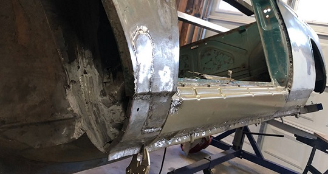
December 2017 - Fender and Quarter Panel Repair (Driver's Side)
With the rocker panels replaced, it is time to cut out the rusted areas of the rear quarter panel and front fender, which is easier with them still pulled away from the body. It is important to visually inspect the inside of the panels for possible hidden rust issues. It is also easier to apply a rust neutralizer as well as POR15 type sealant with the panels more accessible.
A bit of “archeological-type” investigations on why these panels rusted makes me once again point to the drainage issues inherent with these cars. The rusted out area at the base of the quarter panel near the door is due to water backing up and rust working its way up along the B-pillar area. This repair poses a challenge because not only has the skin of the panel rusted away, but also so has the sheet metal framing for the leading edge of the panel which is welded to the body at the door seam and where the panel skin wraps.
The rear of the quarter panel near the wheel arch is a tight seam exposed to road debris and wash. This area could be a combination of attacks to cause the rust. It will pose a challenge because I will need to rebuild the arched rim of the fender.
The front fender rust area is probably due to the removable panel Karmann installed with 3 large sheet metal screws. This panel with a rubber trim strip is intended to prevent road debris and wheel wash from being forced into the exposed frontal area of the rockers and A pillar. The panel might prevent road wash, but it also serves as a dam or barrier for water seepage from above. Water backs up on the back side of the panel, and rust begins its run on poor protected metal along the areas where the rust holes are prevalent.
Cutting Replacement Patches
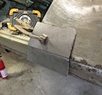
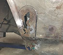
Next step is to cut out the traced area with a cut off wheel. I use the Dremel with smaller wheel for the curve. My 7th grade shop teacher Mr. Gribbel's voice echos in my head "save the line". With the old area removed, I clean the edges, remove any latent paint and minor rust where the welding area will be.
Securing Patches
I invested in some little magnets specifically designed to secure a replacement panel in place prior to welding. I can’t say enough about them and how easy they make it.
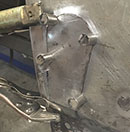 |
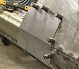 |
{kind=link}
Tack Welds
Finally it’s time to weld. 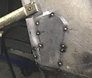
Finishing Welds
Then it’s finishing off the welds. I try not to focus on one location when running a line of welds. This will cause extreme shrinkage. I’ve been told compressed air is a good way to cool the welds, but a respected pro told me not to use compressed air which only spreads the heat causing more shrinkage. You would think “maybe if spray water”? Nah. Rust. Bottom line is you have to expect shrinkage. Most of a body man’s work with welding replacement panels is actually shaping the area with hammer and dolly after the welds. The next amount of time is dedicated to fillers and glazing.
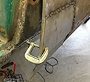 |
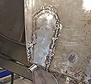 |
Grinding, Smoothing and Shaping
{kind=link}
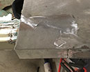
Welding Rear Quarter and Fender Back in Postion
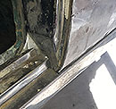
Welding everything back mostly involves filling in the holes where I drilled out the spot welds on the fender lip and doorjamb areas using “rosette welds”. This is an acquire skill, but I started to get the hang of it.
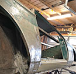